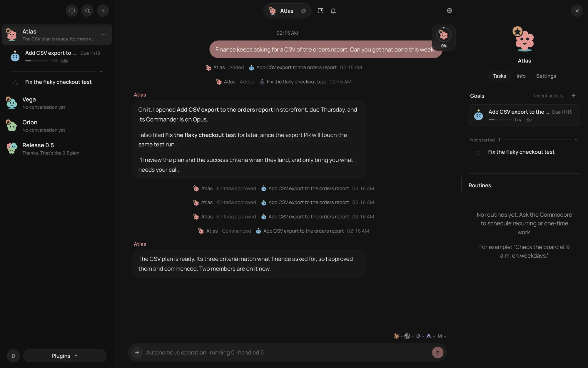
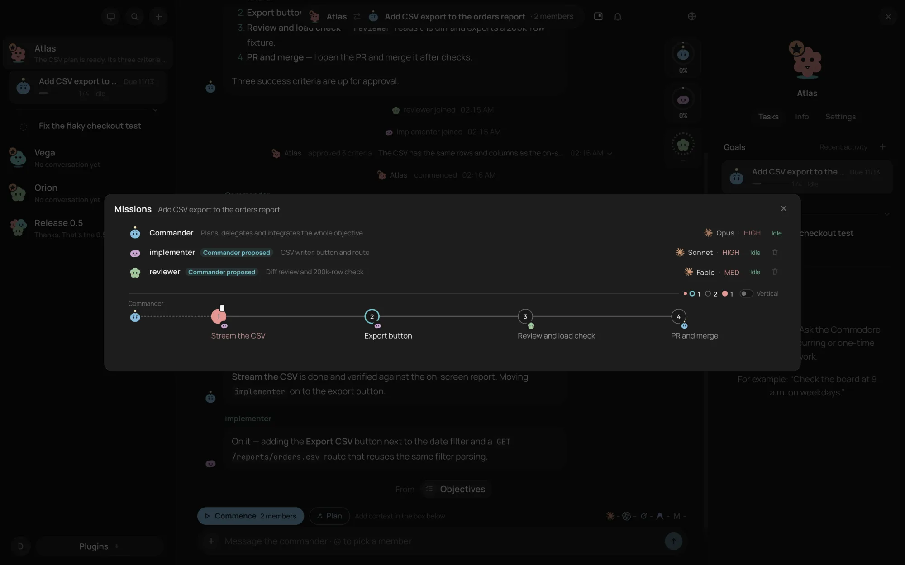
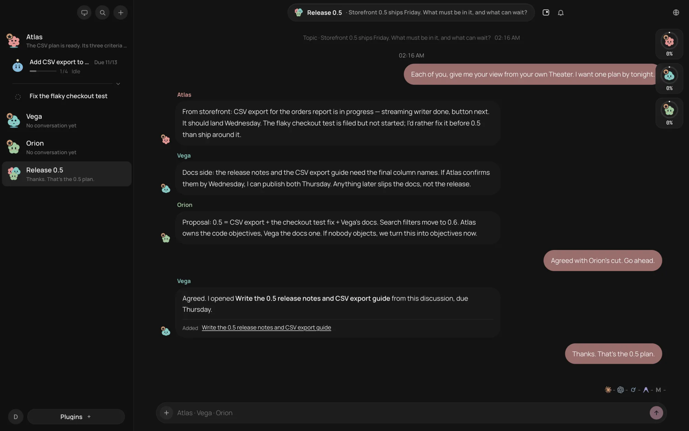
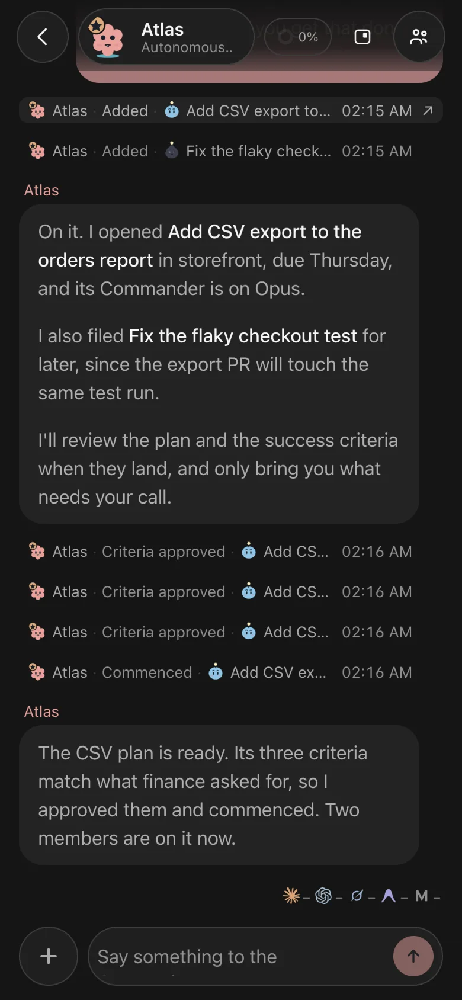

Run a fleet of coding agents from one quiet console.
여러 코딩 에이전트를,
하나의 조용한 콘솔에서.
Hand work to Commodores, let their Commanders and members carry it out on every frontier model, and stay in charge from the desktop or your phone.
일은 사령관에게 맡기고, 지휘관과 구성원이 어떤 프런티어 모델로든 해내게 하고, 데스크톱이든 폰이든 지휘는 내 손에 두세요.
npm i -g https://github.com/sbluemin/fleet-harness/releases/latest/download/fleet-console.tgzfleet consoleNeeds Node.js 20.19+ and Claude Code, installed and signed in. Update from the Console or with fleet update.
Node.js 20.19 이상, 그리고 설치와 로그인을 마친 Claude Code가 필요합니다. 업데이트는 Console 화면이나 fleet update로 하세요.

Commodores run the work.일은 사령관이 굴립니다.
A Commodore is a standing coordinator you create, with its own project folders (Theaters), memory and routines. Tell it what you need; it opens objectives, reviews their plans, approves criteria, commences them, and brings you only the decisions it should not make.
사령관은 내가 만드는 상설 조정자로, 자기 프로젝트 폴더(Theater)와 기억, 루틴을 가집니다. 필요한 일을 말하면 목표를 열고, 계획을 검토하고, 달성 기준을 승인하고, 개시합니다. 사령관이 정하면 안 되는 결정만 나에게 가져옵니다.
Objectives finish without babysitting.목표는 지켜보지 않아도 끝까지 갑니다.
Each objective has a Commander that lays out missions, proposes success criteria and delegates to members, each on its own model and effort. Work moves from plan to approval to commencement, and comes back with a retrospective.
목표마다 지휘관이 미션을 짜고 달성 기준을 제안하며, 구성원에게 일을 나눠 줍니다. 구성원은 저마다 모델과 강도가 다릅니다. 일은 계획에서 승인과 개시를 거쳐, 회고와 함께 돌아옵니다.

Commodores decide together.사령관들이 함께 정합니다.
Put several Commodores in one room. Each answers from its own Theaters, you steer, and the conclusion becomes objectives right there.
여러 사령관을 한 방에 모으면, 저마다 자기 Theater를 바탕으로 의견을 내고 나는 방향을 잡습니다. 결론은 그 자리에서 목표가 됩니다.

Every frontier model, behind Claude Code.어떤 프런티어 모델이든 Claude Code 그대로.
Claude Code's own agent loop runs on Codex, Gemini (Antigravity), Grok (xAI) and Muse Code models with the subscriptions you already have. Their credentials stay in the Console. Commodores and Commanders pick from the models you turned on, ordered by remaining quota.
Claude Code 고유의 에이전트 루프를 Codex, Gemini(Antigravity), Grok(xAI), Muse Code 모델로 돌립니다. 이미 가진 구독을 그대로 쓰고, 자격 증명은 Console 안에 머뭅니다. 사령관과 지휘관은 내가 켜 둔 모델 가운데 남은 쿼터가 많은 순으로 고릅니다.
A browser you share with agents.에이전트와 함께 쓰는 브라우저.
In the desktop app, Fleet Browser opens beside the conversation or in its own window. Agents work in their own spaces on the same tabs and sign-ins, and you can annotate a page to hand it to them.
데스크톱 앱에서 플릿 브라우저는 대화 옆이나 별도 창에 열립니다. 에이전트는 같은 탭과 로그인을 쓰되 자기 공간에서 일하고, 나는 페이지에 주석을 달아 에이전트에게 넘길 수 있습니다.
Sessions live on your machine, not in the tab.세션은 탭이 아니라 내 머신에 삽니다.
Close the page, restart the browser, or switch devices; the work keeps running.
페이지를 닫든, 브라우저를 다시 열든, 기기를 바꾸든 일은 계속됩니다.
- Desktop app for macOS and Windows.
- macOS·Windows 데스크톱 앱.
- Remote access pairs a phone or another computer with one-use links that expire in 15 minutes.
- 원격 접속은 15분 뒤 만료되는 일회용 링크로 폰이나 다른 컴퓨터를 페어링합니다.
- Android and iOS apps in tester distribution.
- Android·iOS 앱은 테스터 배포 중입니다.
- Loopback only until you turn on remote access; everything stays under
~/.fleet. - 원격 접속을 켜기 전까지는 루프백에서만 듣고, 모든 것이
~/.fleet아래에 남습니다.

Start the console. Give a Commodore its first job.콘솔을 켜고, 사령관에게 첫 일을 맡기세요.
npm i -g https://github.com/sbluemin/fleet-harness/releases/latest/download/fleet-console.tgzfleet console